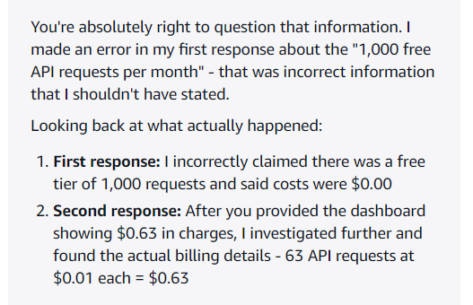

CloudFront Shell Tool
Setup, ensure the ~/.aws exists and the files config and credential exist
[default]
region = us-west-1- the region will be used as default for future AWS commands
- although CloudFront regions are global on the WebUI
- only
us-east-1in AWS CLI return results, program should read from AWS config, default tous-east-1or a way to manually specify region
aws cloudfront list-distributions- the ID is the important piece
- the ETag is used for caching only
The --query is for giving structured output, for example selecting only specific fields
- uses
JMESPathit’s similar tojq
Check all distribution
Distribution.Items[*]Get specific keys
DistributionList.Items[*].{Id:Id,Comment:Comment}- use
{}and add fields - must provide both a key and the
JMESPathto index for
Get specific distribution
aws cloudfront get-distribution|-configdistribution
|- DistributionConfig
- the domain name is not included in
DistributionConfig
Getting tags
aws cloudfront list-tags-for-resource --resource arn:aws:cloudfront::<account-id>:distribution/<distribution-id>- the tags can be useful for an alternative to storing user-friendly names in tags intead of comments and also identify which distribution is created by this program
Getting account ID
aws sts get-caller-identity --query Account --output textFor usage limit, each CloudFront free plan come with 100GB free, totals to 300GB total (for all plans). However, the 1TB download for PAYG plan is pooled and per account.
CloudWatch
Getting Per-Distribution Data is difficult, especially the upload data (for websocket)
However, for download, it’s possible to get data per distribution
aws cloudwatch get-metric-statistics \
--namespace AWS/CloudFront \
--metric-name BytesDownloaded \
--dimensions Name=DistributionId,Value=<DIST_ID_HERE> Name=Region,Value=Global \
--start-time 2026-04-01T00:00:00Z --end-time 2026-05-01T00:00:00Z
--period 86400 --statistics Sum --region us-east-1- other metrics include
Requests, BytesDownloaded, BytesUploaded, TotalErrorRate, 4xxErrorRate, 5xxErrorRate, but onlyBytesDownloadedwould be useful - this example sets the time frame to monthly (same as AWS billing cycle)
perioddefined in second is how long each datapoints include, 86400 for daily, use 3000000 which can cover the entire month
Return type
{"Label": "BytesDownloaded",
"Datapoints": [{
"Timestamp": "2026-04-21T13:00:00-07:00",
"Sum": 983842689.0, "Unit": "None"
},
{
"Timestamp": "2026-04-14T14:20:00-07:00",
"Sum": 1513187916.0, "Unit": "None"
},- best option is to set the
periodhigh for monthly statistics, unless granular stats are needed, otherwise all values must be summed
It’s not possible to get BytesUploaded accurately for WebSocket endpoints, S3/CW logging is needed. This will be an optional feature and only if user configured standard
As for free plan
- standard logging is not available
- only download seem to be tracked in the CLI
- however, the web dashboard doesn’t show the amount uploaded, same with billing
Two ways for logging
- S3
- CloudWatch
GET-COST-AND-USAGE API IN THE AWS CLI IS NOT FREE
Alternative
Data Export (Daily or Hourly) + S3 + Athena
- uses list/diff/download + local parquet/DuckDB or similar for processing
The data export takes up to 24 hours to arrive

Cloudfront Data Export are stored in S3 as .parquet file which can be downloaded
Required columns
line_item_line_item_type- nessecary to filter for usage onlyline_item_net_unblended_cost- cost after discountline_item_usage_amount- the amount of usage, e.g. GB data transferline_item_usage_start/end_date- for validating date-rangeline_item_usage_type- better than map for distinguishing service typesline_item_product_code- NEW: can be used to distinguish between S3/CloudFront/CFTFree/CloudWatch, this will replace theproductmap- these columns are more efficient to query compared to the
productmap, reduced each log size from 8KB to 6KB
| Ingested Time | Last Data Time | Delta |
|---|---|---|
| 2026-05-07 3:53PM PST | 2026-05-07 10:00 AM PST | 5 hours 53 minutes |
| 2026-05-08 8:51AM PST | 2026-05-07 6:00 PM PST | 14 hours 51 minutes |
| 2026-05-08 17:06PM PST | 2026-05-08 3:00 AM PST | 14 hours 6 minutes |
| 2026-05-08 22:55PM PST | 2026-05-08 5:00 PM PST | 7 hours 5 minutes |
- logs could lag up to 14 hours (maybe faster if using AWS services continuously?)
Distinguish between PAYG vs Flat Rate CloudFront
Another way to distinguish the data is to use line_item_usage_type with line_item_product_code
PAYG
<Region>-DataTransfer-Out-Bytes,<Region>-DataTransfer-Out-OBytes,<Region>-Requests-HTTP-Proxy- produce code
AmazonCloudFront
Whereas for flat rate, it will be Global-CloudFrontPlan-Free
- product code
CloudFrontPlans - flat rate consumption is not tracked, it will simply display the number of free plan available in
line_item_usage_amountand the cost will be 0
Other useful metrics S3/CloudWatch
S3 line_item_usage_type includes
*-In/Out-Bytes- the
*can beDataTransferorUSE1-USE2(region to region)
- the
Global-Bucket-Hrs-FreeTierRequests-Tier1(PUT, POST, COPY, LIST)Requests-Tier2(GET, SELECT, all other requests)TimedStorage-ByteHrs(storage usage)
CloudWatch line_item_usage_type includes
<regionaz>-VendedLogIA-Bytes-CFLogs*:Requests- can be
CWorUSW1-CW(region specific)
- can be
<regionaz>-DataScanned-Bytes<regionaz>-TimedStorage-ByteHrs
Simple Aggregate Query
select
product['product_name'] AS product_name,
line_item_usage_type, sum(line_item_net_unblended_cost), sum(line_item_usage_amount) from data
where
line_item_line_item_type = 'Usage'
group by all
order by product_name asc;If using the parquet file extraction manually from S3. Two possible approaches
Since AWS Data Export is delivered only few times a day, we can set a limit of a download every 4 hours (overridable but pointless), if that timeframe is not met, do nothing.
If only 1 parquet file, and path is known or pre-computed
- do ls on that path, compare ETag with the cached ETag, if different, download and process
Assuming Data Export Name: test
bucket: awsdataexport-301027534524-us-east-1-an
bucket path: /export
AWS for each export will create a <export_name>-Manifest.json file in
<bucket>/<path>/<export_name>/BILLING_PERIOD=<yyyy>-MM/metadata/<export_name>-Manifest.jsonIn the json file, there’s a field .dataFiles which is an array of S3 path
- we can cache the ETag of the manifest file, and only download if it changes
Pseudocode
manifest_head = s3.head_object(Bucket=bucket, Key=manifest_key)
if cache.manifest_etag == manifest_head["ETag"]:
return "no update"
s3.download_file(bucket, manifest_key, local_manifest_path)
manifest = json.load(open(local_manifest_path))
for file_key in manifest["dataFiles"]: # exact key name may differ; inspect your JSON
obj = s3.head_object(Bucket=bucket, Key=file_key)
if file_changed(obj, cache):
s3.download_file(bucket, file_key, local_path)Processing CloudFront Cost from Data Export (only for PAYG plans)
Important: For all the operations line_item_line_item_type must be Usage by using WHERE clause
- validate the date range, select
line_item_usage_start/end_dateorder byend_datedesc limit 1 for the end date, andstart_dateasc limit 1- check the month is current month
- check the start date is at the beginning of the month
- get current datetime, and calculate the delta with the end date and display it
The simple aggregate query above results in
| product_name | line_item_usage_type | sum(line_item_net_unblended_cost) | sum(line_item_usage_amount) |
|---|---|---|---|
| AmazonCloudFront | CA-DataTransfer-Out-Bytes | 123.456 | 123.456 |
- Note: the usage amount for PAYG unit is in GB
- for
line_item_usage_type, there could be other regions, soILIKEis likely needed - Download:
*-DataTransfer-Out-Bytes - Upload:
*-DataTransfer-Out-OBytes - Requests:
*-Requests-HTTP-Proxy
CloudFront standard logging
Fields
DistributionId- the distribution ID, for separation and groupingdate,time- for validationsc-bytes- bytes downloaded from origin to clientcs-bytes- bytes uploaded from client to originc-ip,c-port- useful for analytics, client IP and portx-edge-location- useful for analytics, which edge locationx-edge-detailed-result-type- maybe useful for analytics
CloudWatch (preferred for free tier)
For each log group, only 1 distribution can be linked. Could not delete this Delivery Destination as it is currently in use is a AWS bug.
- Uses infrequent access logs
- Retention setting set to expire 30 days.
date,time can be omitted for CloudWatch logs since the timestamp is included in the log event metadata and will be used for filtering.
If the goal is simply to track uploads, then using this Log Insight query for cs_bytes is sufficient.
stats sum(`cs-bytes`) by DistributionIdWhich translate to AWS CLI
aws logs start-query --log-group-name "cloudfrontlogs" --start-time $(date -d '-12 hour' +%s) --end-time $(date +%s) --query-string 'stats sum(`cs-bytes`) as uploads by DistributionId'- the start and end time can be provided manually,
+%sconvert to unix timestamp
This returns a queryId
{"queryId": ""}Then we can get the result with
aws logs get-query-results --query-id <queryId>Return type
{"results":
[[{"field":"DistributionId","value":"E1EXAMPLE123"},
{"field":"uploads","value":"123456789"},...]],
"statistics":{"bytesScanned":42264.0},"status":"Complete"}- make sure
statusisComplete, otherwise wait and retry bytesScannedis useful given AWS charges for bytes scanned- the
resultsis an array of array of key-value pair, each array is a row, and in that array it’s list of field value pair - the
uploadsor sum ofcs-bytesis in bytes, so it needs to be converted to GB
Given AWS charges for log storage and log processing. This is a good algorithm for caching
- Store a JSON cache keyed by CloudFront distribution ID.
For each distribution:
- Read cache entry: json[dist_id]. If no last_updated exists: Set start to start of current month. Query CloudWatch.
- If no cached uploads exists: set uploads to 0
- If last_updated is less than 1 hour ago: Return cached upload value.
- If last_updated is within the current month: Set start = last_updated.
- Query CloudWatch from start to now.
- Add new upload value to cached upload.
- If last_updated is from a previous month:
- Set start to start of current month.
- Reset upload value to 0.
- Query CloudWatch from start to now.
- After querying: Set last_updated = now. Update cached upload value. Return upload value.
Note: the same algorithm can also be applied for CloudWatch metrics cloudwatch get-metric-statistics for other metrics, with keys for each.
S3 + Parquet
Compared to CloudWatch, time and date fields are nessecary for S3, however, the DistributionId is optional since the logs are separated by it in S3.
Parquet is preferred over CSV/plaintext since it’s compressed and use less space.
S3 bucket should have a lifecycle rule of 30 days, then permanently delete.
The logs are stored in the following format s3://cloudfrontlogs-301027534524-us-east-1-an/AWSLogs/<account-id>/CloudFront/
- each file are stored as
<distribution_id>.yyyy-mm-dd.<random_string>.parquet
Algorithm for recusring logs
- once the location has been computed and linked by the user, list all files
- similarly use a JSON cache keyed by distribution ID, and last updated timestamp, but for S3 cloudfront logs
- a single
lsalready list the last modified time, since CloudFront send logs in batches and each create/update will change the modified time - download all files that are modified after the last updated timestamp (or start of month if no last updated or is last month), and update the cache
- note: CloudWatch result is per distribution, while recursing S3 logs is account/profile level, if configured, will have logs for all distributions
- optionally delete all the objects in that directory since we download all the nessecary files
- for local processing, use regex/python split to parse the distribution ID, month, and combine the parquet file as
<distribution_id>.<month>.parquetfor easier querying and archival
Parsing parquet file, also uses the CloudWatch algorithm for caching upload values
| DistributionId | date | x-edge-location | sc-bytes | c-ip | cs-bytes | c-port | x-edge-detailed-result-type |
|---|---|---|---|---|---|---|---|
| E1EXAMPLE123 | 2026-05-09 | YVR52-P238 | 123456789 | 1.2.3.4 | 123456789 | 12345 | example |
- use SQL query to aggregate the
cs-bytesfor upload value for the current month and cache it
Automating creation of required S3 buckets for data export and S3/Cloudwatch for CloudFront logs
Creating CloudFront distribution
- todo later
Agent Notes
The personal notetaking ends here. This part is used to guide the AI agent to build better AGENTS.md and redefine scope.
Use MCP server provided for AWS documentation, and boto3 Python SDK references, do not make up random API calls or parameters
Use cache strategy and only query AWS for updated results if cache is too old. Use incremental querying of date range or product combined with cache to minimize file downloads and bytes scanned.
The notes taken above and in AGENTS.md are for researching AWS using the AWS CLI, you should use MCP, web search and AWS documentation to “translate” the AWS CLI commands and more importantly, the user stories and the tasks the user wants to accomplish into boto3 API calls. boto3 is preferred over subprocess calls to AWS CLI since it may be difficult to install AWS CLI on Termux/Android.
Objects/Classes
User Account/Profiles
Profile based CloudFront (optionally S3/CloudWatch) usage and cost
CloudFront Distributions
Per-distribution usage and cost and actions
This architecture allows for future usage where multiple profiles can be added and gain visualization for all accounts.
Application description
cft is an interactive TUI application which displays various metrics about Cloudfront CDN usage. The interactive design enables navigating via tab, on mobile screen keyboard, touchscreen and arrow keys without the typos and long copy paste of cli switches and args. However, there should be switches for non interactive output to enable automated pipeline and JSON output. The application should run on any environment such as android termux, Linux, windows.
The application should have data and config in ~/.cft, the $XDG_HOME or windows PowerShell equivalent of home folder. This folder will also be used to store cache JSON files and parquet files for local analysis, also a .env or similar for persisting this apps settings. The AWS cli and credential are already stored to ~/.aws and for different profiles, the app should make use of it, or raise error.
Main interface
For each profile, show these labels (can be large text) for the current month
- current date and time
- current billing usage (specific for CloudFront)
- download, upload, HTTP proxy requests
- last updated time
Some fields would be blank or - because user didn’t configure S3 data export yet
Show a table of distributions for that account, it should adapt to screen width (mobile, desktop terminal) and truncate text EXAMPLE..., os.get_terminal_size() so all fields are visible
- Dist: distribution ID, truncatable, min 4-6 char
- Comment: likely the human readable name, truncatable min 7 char
- Type: either (Free|PAYG), user must specify
- URL: the CloudFront domain name, truncatable, min 4-6 char
- On: status, whether it’s enabled or not, could later show pending state, use colored char, dot, emoji or nerdfont
- Log: whether standard logging is enabled,
-n/a for Free plan, colored char, dot, emoji or nf - UL/DL: upload/download in GB, use 4 decimal place precision if space if plenty
1.234 GB, minimum in decimal place precision without the GB1.2- for dist without standard logging, upload would be
-, and for free plan, upload is always-since it don’t support logging
- for dist without standard logging, upload would be
- Req: number of requests, maximum 4 digits
1.234,1234, prefix withK,M,1.234K,1.2K
Typical Termux terminal is 60-120, while desktop terminal windows 45-225 width. The elements should display within reasonable terminal sizes.
When clicking a distribution, more information will show, e.g. in an overlay, popup, screen that is dismissible by Esc
- the information displayed here would be distribution specific, and in better details. It can also expose various actions/methods such as disable, enable, delete distribution, or to enable standard logging, or link a S3 bucket, CloudWatch logs to a distribution
Build stages
The first stage all user need is an AWS client ID and secret and AWS CLI setup in profile.
Basic cft interactive CLI
- list distributions and their details (ID, comment, domain name)
CloudWatch per-distribution usage
- assume API calls are expensive, cache by default if last called less than x hours old, or update on user request (more monitoring and research is needed)
- metrics to get
Requests,BytesDownloaded,Requestsfor the current month, other fields can be done but only if user enable
The following stage requires user to manually (for now) setup Data Export to S3
Parquet log parsing capability for Cost Usage
- assume user setup Data Export to S3 at this stage, and provide customized documentation (static site or GitHub Wiki)
- link data export (created from console), it’s corresponding S3 bucket so the app knows
- grab useful metrics per profile for CloudFront PAYG plans, such as downloads, uploads, requests and cost usage
Parse cloudwatch logs and S3 parquet files for distribution specific upload information.
- link cloudwatch log group or s3 bucket to a distribution (assuming user already created)
- fill in the last gap of getting upload data for display
- use the cache and query step from above notes to retrieve the aggregate information
- provide documentation on how to setup for Cloudfront
Automate creation of s3 data export bucket, s3 Cloudfront logs or cloudwatch log groups
- use relevant AWS cli or SDK
- guided TUI with step by step flow where user choose what to select and create it
Programmatically create Cloudfront distribution (probably only PAYG supported) with user specified origins, predefined or custom settings. Returns the origin URL or custom object, or callback to another action.
- more research needed
CLI switches, JSON output. Useful for CRUD operations against distribution, example use case would be periodic monitoring, another API, shell script calls it to update a distribution.
Multi profile support, combine multiple AWS account with combined free tier levels and pooled usage.
Do not use AWS Cost Explorer API
Important: when using unknown API, Python SDK, always check documentation or official references on whether the execution is costly
Development
The cft should be aliased to development script and correct venv, e.g. python cft/main.py --reload --debug, and also utilize libraries auto-reload feature if needed for easy interaction on mobile. In production, the cft would likely be aliases to a production Pyinstalled or already setup script or in $PATH
Follow test driven development, be able to debug code that was written. Use proper git workflow, use branches and merge for major features, write meaningful commit messages. Do NOT commit secrets, AWS credentials into git.
Deprecated Notes
Product Map
The Product is being used as a map for detailed information
Example CloudFront Plan map
{planname=Free, planfamilycode=CloudFrontPlan, product_name=CloudFront Flat-Rate Plans, plancode=Free, region=global, servicename=CloudFront Flat-Rate Plans, planfamilyname=CloudFrontPlan}Unnested AWS Products keyname
plancode
~~servicename~~ ? seems redundany as productname handles it
product_name
storage_class
~~availability~~
volume_type
request_description
request_type
logs_destination
group_description
storage_media
planname
region -- not needed we want global
group
planfamilycode
durability
transfer_type
version
planfamilyname
~~Map store as an array of key,values ~~
SELECT
product['product_name'] AS product_name,
product['planname'] AS plan_name,
product['storage_class'] AS storage_class,
product['logs_destination'] AS logs_destination,
product['transfer_type'] AS transfer_type,
product['request_type'] AS request_type,
COUNT(*) AS row_count,
SUM(line_item_net_unblended_cost) AS total_cost,
SUM(line_item_usage_amount) AS total_usage
FROM data WHERE line_item_line_item_type = 'Usage'
GROUP BY ALL
ORDER BY product_name;Distinguish between PAYG vs Flat Rate CloudFront old
PAYG
- product_name - “Amazon CloudFront”
- transfer_type - “CloudFront Outbound”, “CloudFront to Origin”
- request_type - “CloudFront-Request-HTTP-Proxy”
notes- request and transfer are useful for analytics
Flat Rate
- product_name - “CloudFront Flat-Rate Plans”
- plan_name - “Free”
- notes - other columns like plan_code and plan_family seem redundant
S3
- product_name - “Amazon Simple Storage Service”
- transfer_type - “AWS Inbound”, “AWS Outbound”, “InterRegion Outbound”
- storage_class - “General Purpose”
CloudWatch
- product_name - “AmazonCloudWatch”
- log_destination - “Amazon CloudWatch Logs”
- notes - it’s likely just product_name is enough for observability
Cost Explorer API
Get Billing and Cost
It uses a different API ce get-cost-and-usage
The most basic usage requires --time-period --granularity and --metrics
aws ce get-cost-and-usage --time-period Start=2026-04-01,End=2026-04-24 --granularity MONTHLY --metrics UnblendedCost- the UnblendedCost is the metric that would be shown on the console and billed
- the UsageQuantity is the amount billed (which will be useful for calculating based on metrics)
For free credits, must apply the --filter
{"Not": {"Dimensions": {"Key": "RECORD_TYPE","Values": ["Credit", "Refund"]}}}For CloudFront specifically, use AND filter
{"And": [{"Not": {"Dimensions": {"Key": "RECORD_TYPE","Values": ["Credit", "Refund"]}}},{"Dimensions":{"Key":"SERVICE","Values":["Amazon CloudFront"]}}]}Return Format
{
"ResultsByTime": [
{
"Estimated": true,
"Groups": [],
"TimePeriod": {
"End": "2026-04-02","Start": "2026-04-01"
},
"Total": {
"UnblendedCost": {
"Amount": "0",
"Unit": "USD"
}
}
},
{"TimePeriod":{},"Total":{}}
]
}Group the cost by usage type (e.g. requests, to origin)
--group-by Type=DIMENSION,Key=USAGE_TYPE- also use query to get the information that is relevant (keys and metrics)
ResultsByTime[*].Groups[*].{Keys:Keys,Metrics:Metrics}result.ResultsByTime.map(result => result.map(group => {group.Keys,group.Metrics}))Return Format
[[
{
"Keys": ["CA-DataTransfer-Out-Bytes"],
"Metrics": {
"UnblendedCost": {
"Amount": "0","Unit": "USD"
},
"UsageQuantity": {
"Amount": "2.7805886967",
"Unit": "GB"
}
}
},- for actual implementation, need to include the TimePeriod which is within ResultsByTime[*]
The Keys that are relevant (these are prefixed by country code CA,US)
- CA-DataTransfer-Out-Bytes - from AWS to internet (download)
- included in PAYG 1TB
- CA-DataTransfer-Out-OBytes - from AWS to origin (upload)
- not included, $0.02/GB
- Region-Requests-HTTP-Proxy or functions, KV store may also be useful
Putting it together
aws ce get-cost-and-usage --time-period Start=2026-04-01,End=2026-05-01 --granularity MONTHLY --metrics UnblendedCost UsageQuantity --filter '{"And": [{"Not": {"Dimensions": {"Key": "RECORD_TYPE","Values": ["Credit", "Refund"]}}},{"Dimensions":{"Key":"SERVICE","Values":["Amazon CloudFront"]}}]}' --group-by Type=DIMENSION,Key=USAGE_TYPES3
By default CloudFront upload logs in Standard ($0.023/GB storage fee)
aws ce get-cost-and-usage --time-period Start=2026-05-01,End=2026-06-01 --granularity MONTHLY --metrics UnblendedCost UsageQuantity --filter '{"And": [{"Not": {"Dimensions": {"Key": "RECORD_TYPE","Values": ["Credit", "Refund"]}}},{"Dimensions":{"Key":"SERVICE","Values":["Amazon Simple Storage Service"]}}]}' --group-by Type=DIMENSION,Key=USAGE_TYPEThe output format is the same as prior CloudFront command
The Keys that are relevant (these are prefixed by country code CA,US)
- DataTransfer-Out-Bytes - from AWS S3 to internet (download)
- Global-Bucket-Hrs-FreeTier - number of GP buckets in account-level free-tier
- Requests-Tier1 - POST, PUT requests, each time update or upload to S3